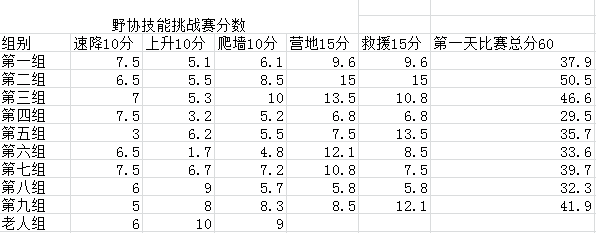

发信人: wayneleaf (大熊家的葉小宝｜喜欢上海的理由), 信区: outdoor
标 题: 【合集】野协内部技能赛第一天比赛成绩出来咯~
发信站: 饮水思源 (2013年08月18日13:44:40 星期天), 站内信件
☆──────────────────────────────────────☆
zzmax (zzmaxu) 于 2013年05月11日21:14:16 星期六)
提到：
 screen.width - 200){this.width = screen.width - 200}">
比赛成绩都还不错~
大家明天要加油！
☆──────────────────────────────────────☆
icermoon (icer 雨神) 于 2013年05月11日21:31:39 星期六)
提到：
评分标准是啥??
老人组速降在搞毛线啊,要被弹么?
【 在 zzmax 的大作中提到: 】
: http://bbs.sjtu.edu.cn../htm/pics/1368278035103823.png
: 比赛成绩都还不错~
: 大家明天要加油！
☆──────────────────────────────────────☆
zzmax (zzmaxu) 于 2013年05月11日21:35:15 星期六)
提到：
额。群共享里的比赛细则，然后有一些还有我们比赛加上去的细则。。
主要是北大比赛的规则
【 在 icermoon 的大作中提到: 】
: 评分标准是啥??
: 老人组速降在搞毛线啊,要被弹么?
☆──────────────────────────────────────☆
ekc (西域猎鹰) 于 2013年05月11日21:38:21 星期六)
提到：
除了救援外的分数就是一碗热翔，还好，不是倒数~~
【 在 zzmax 的大作中提到: 】
: http://bbs.sjtu.edu.cn../htm/pics/1368278035103823.png
: 比赛成绩都还不错~
: 大家明天要加油！
☆──────────────────────────────────────☆
ekc (西域猎鹰) 于 2013年05月11日21:39:59 星期六)
提到：
你怎么不问第五组速降在搞毛？。。。。
【 在 icermoon 的大作中提到: 】
: 评分标准是啥??
: 老人组速降在搞毛线啊,要被弹么?
☆──────────────────────────────────────☆
icermoon (icer 雨神) 于 2013年05月11日22:31:23 星期六)
提到：
好多群,哪个???
速降这种东西不应该都是满分么?
【 在 zzmax 的大作中提到: 】
: 额。群共享里的比赛细则，然后有一些还有我们比赛加上去的细则。。
: 主要是北大比赛的规则
☆──────────────────────────────────────☆
icermoon (icer 雨神) 于 2013年05月11日22:32:28 星期六)
提到：
那不应该是你们的事情么?
【 在 ekc 的大作中提到: 】
: 你怎么不问第五组速降在搞毛？。。。。
☆──────────────────────────────────────☆
icermoon (icer 雨神) 于 2013年05月11日22:37:11 星期六)
提到：
有没有分组名单啥的?
【 在 zzmax 的大作中提到: 】
: http://bbs.sjtu.edu.cn../htm/pics/1368278035103823.png
: 比赛成绩都还不错~
: 大家明天要加油！
☆──────────────────────────────────────☆
zzmax (zzmaxu) 于 2013年05月11日22:45:55 星期六)
提到：
登山队的qq群里现在有了。。
【 在 icermoon 的大作中提到: 】
: 好多群,哪个???
: 速降这种东西不应该都是满分么?
☆──────────────────────────────────────☆
RockClimbing (爱攀岩~) 于 2013年05月11日23:31:35 星期六)
提到：
确实。。。
求现场回放一下。。。
【 在 icermoon 的大作中提到: 】
: 评分标准是啥??
: 老人组速降在搞毛线啊,要被弹么?
|